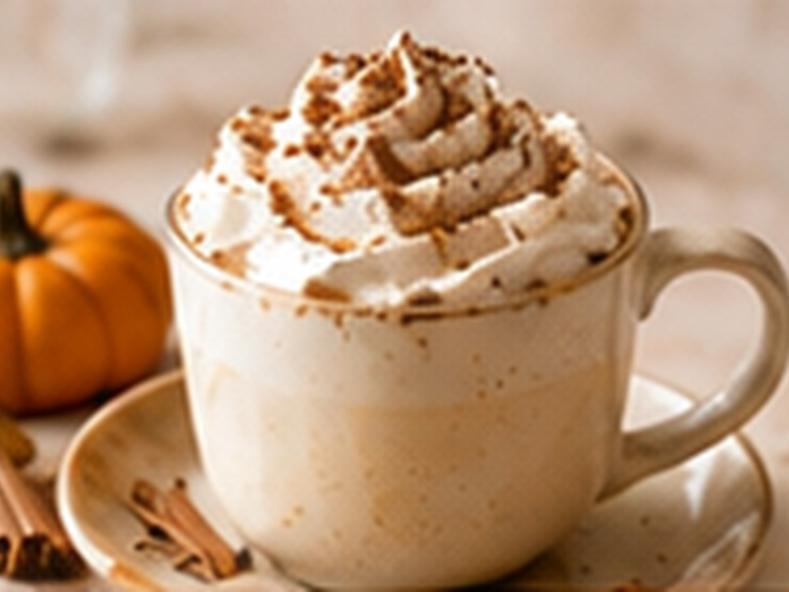

✨ KI-generiertes Bild Saisonale RezepteSaisonale Rezepte
Pumpkin Spice Latte
Herbstlicher Klassiker.
⏱6 Min.
📶Mittel
☕1 Portion
🫘Zutaten
- Espresso1 Shot
- Milch180 ml
- Kürbispüree2 EL
- Zimt, Muskat, Ingwerje 1 Prise
📋Zubereitung
- 1Kürbispüree mit den Gewürzen kurz erwärmen.
- 2Espresso zubereiten und mit der Kürbismischung verrühren.
- 3Aufgeschäumte Milch dazugeben.
💡
Kaffee für dieses Rezept entdeckenLeNoKo Shop
→
Kaffee-Tipp
Die Honig- und Nougatnoten von Aurum Noctis passen gut zu Kürbisgewürz.